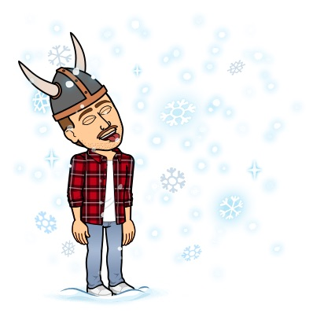

About Matt:
 My name is Matt, I am from Readington New Jersey and I went to high school in Flemington
at Hunterdon Central. I'm a junior and I'm in Army ROTC at Rutgers and I've been in the National Guard for about
three years. After my military career I want to go into law enforcement. Over the summers
I spend my time working and going to the beach. I work for PSE&G over the summers and
have a beach house in Seaside Park, New Jersey. I also have a motorcycle and like to go
riding as often as I can. I also like to go fishing and do other things outdoors during the
summer.
Now here is Country Roads by John Denver.
Almost heaven, West Virginia
Blue Ridge Mountains, Shenandoah River
Life is old there, older than the trees
Younger than the mountains, blowing like a breeze
Country roads, take me home
To the place I belong
West Virginia, mountain mama
Take me home, country roads
All my memories gather round her
Miner's lady, stranger to blue water
Dark and dusty, painted on the sky
Misty taste of moonshine, teardrop in my eye
Country roads, take me home
To the place I belong
West Virginia, mountain mama
Take me home, country roads
I hear her voice, in the morning hour she calls me
The radio reminds me of my home far away
And driving down the road I get a feeling
That I should have been home yesterday, yesterday
Country roads, take me home
To the place I belong
West Virginia, mountain mama
Take me home, country roads
Country roads, take me home
To the place I belong
West Virginia, mountain mama
Take me home, country roads
Take me home, down country roads
Take me home, down country roads